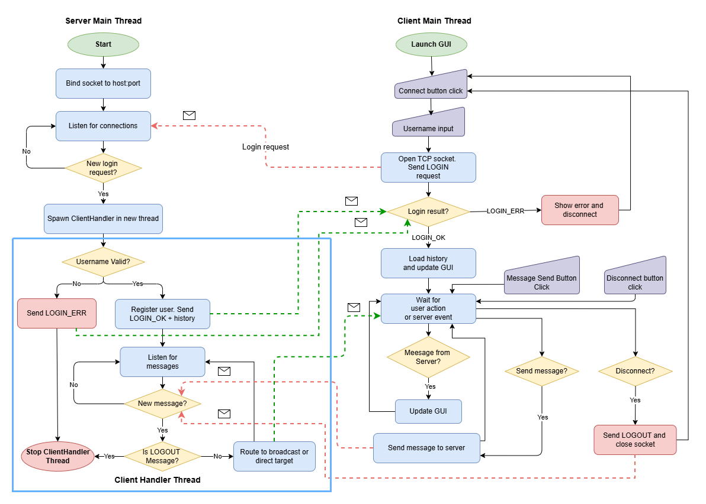
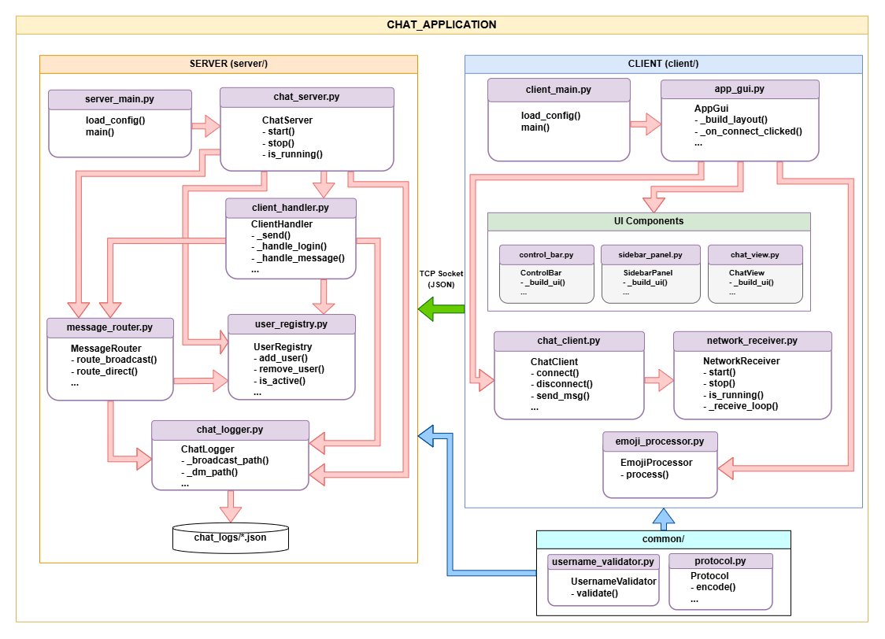

Teams Lite Chat is a desktop Python chat application. Multiple users connect to a shared server and can exchange messages in a public channel or in private 1-on-1 conversations. The server runs as a background command-line process, and the client is a simple TkInter GUI which can connect with the server and exchange messages with other users. Basic structure of the client-server model is based on This example.
:birthday:, :haha:, :lol:, :fire:, :like:, :check:, :), :(, or <3 and they are replaced with the matching emoji before the message is sent.server_main.py starts by reading config.json and passing the host and port to ChatServer.
ChatServer opens a TCP socket, starts listening, and waits for incoming connections.ClientHandler running in a background thread, so multiple users can connect at the same time.ClientHandler reads messages from the client one by one. The first message must be a login request. UsernameValidator checks the format, and UserRegistry verifies the name is not already taken. If everything is valid, ChatLogger loads the user's chat history and sends it back to the client.MessageRouter. For a broadcast, it logs the message and sends it to every connected user via UserRegistry. For a direct message, it logs it and delivers it to the recipient with a copy back to the sender.ClientHandler removes them from UserRegistry and notifies the remaining users.All messages are saved by ChatLogger as JSON files in chat_logs/ - one file for the broadcast channel and one per DM pair.
client_main.py reads config.json and passes it to AppGui, which builds the Tkinter window.
AppGui sets up three panels: ControlBar (the connect/disconnect bar at the top), SidebarPanel (the broadcast button and the online user list), and ChatView (the message history and input bar).AppGui creates a ChatClient that opens a socket connection to the server and starts a NetworkReceiver thread in the background. That thread handles incoming messages so the GUI stays responsive.AppGui loads the chat history and updates the view. SidebarPanel is updated with the current online user list.EmojiProcessor replaces any shortcodes and ChatClient sends the message to the server.root.after for a GUI update. Depending on the message type - a chat message, a user list update, or a system notification - it is routed to the correct part of the interface.Open a terminal in the chat_application/ folder:
python server/server_main.pyThe server prints Server listening on localhost:5555 when ready.
Open a separate terminal for each user:
python client/client_main.pyClick Connect, enter a username, and start chatting. Click Disconnect when done.
Host and port can be changed in config.json.


I hadn't used Tkinter before, so I had to read up on it before diving into the GUI code. The tricky parts were the layouting and most importantly, figuring out that one can't change GUI components from a background thread. Any update coming from off the main thread has to be done via root.after(0, ...), otherwise Tkinter crashes or behaves unpredictably.
I hadn't worked much with threads before, so the concepts took a bit of time to learn. The main challenge was understanding what runs in parallel and what doesn't. In the server, each connected client runs in its own thread (See Single-Client bug below). On the client side, NetworkReceiver runs in a background thread so that the main thread running the GUI does not freeze (In the first version, I did not create a thread for the receiver and the GUI would freeze until a message was received).
The first version of the server only handled one client at a time. It would accept a connection, enter the read loop, and not accept anyone else until that client disconnected. The fix was straightforward: move each ClientHandler into its own background thread. The server now spawns a thread per connection and immediately goes back to accept(), so multiple clients can be connected at once.
When A sends to B, the server creates a log file for that conversation. But when B replies to A, I initially created a second file - so the same conversation ended up split across dm-A-B.json and dm-B-A.json, and history would load incorrectly. The fix was to always sort the two usernames alphabetically before building the filename. That way, any DM between A and B always maps to the same file regardless of who initiates the message.